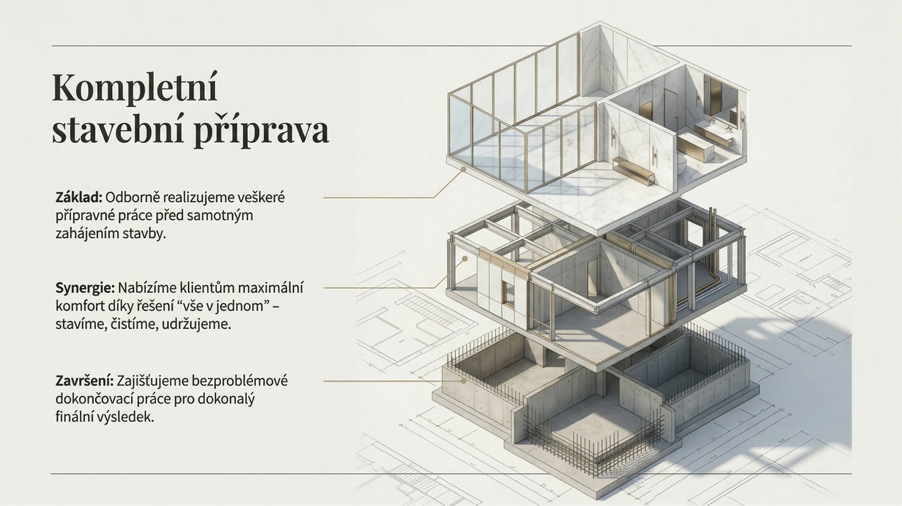
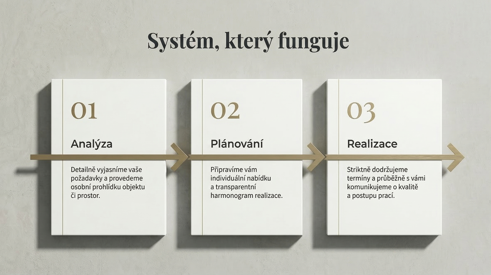

Úklid. Příprava. Dokončení.
Prostor, který je připravený pracovat i reprezentovat.
Gesen zajišťuje pravidelný úklid, stavební přípravu i finální dokončení prostoru tak, aby na sebe jednotlivé kroky plynule navazovaly. Pracujeme tam, kde je potřeba pořádek, spolehlivá organizace a výsledek, který obstojí v provozu i při předání.

Hlavní služby
Co pro klienty nejčastěji zajišťujeme.
Pomáháme tam, kde je potřeba udržet pořádek v provozu, připravit prostor pro další fázi prací nebo dovést objekt do čistého stavu před předáním.
Pravidelný a jednorázový úklid
Stabilní péče o kanceláře, společné prostory i provozní zóny s důrazem na dlouhodobý standard čistoty.
Úklid po stavbě a rekonstrukci
Důkladné dočištění prostoru po stavebních pracích včetně odstranění prachu a přípravy pro další využití.
Stavební příprava a finální dokončení
Přípravné práce, podpora návaznosti dalších profesí a finální dotažení detailu před uvedením prostoru do provozu.
Proč Gesen
Když mají práce navazovat, je potřeba partner, který drží pořádek, organizaci i výsledek.
Neřešíme jen samotné provedení jedné činnosti. Sledujeme, v jaké fázi se objekt nachází, co bude následovat a jak má prostor působit po dokončení.
- navrhujeme rozsah služeb podle skutečného stavu prostoru,
- držíme čistotu a pořádek i v průběhu náročnější realizace,
- myslíme na finální dojem při provozu i při předání klientovi.
